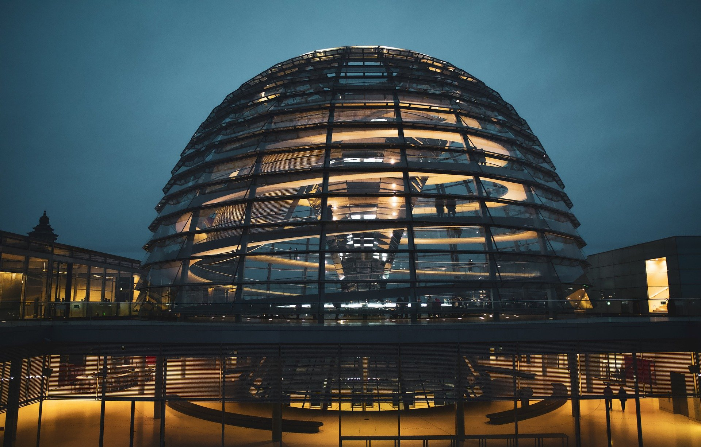
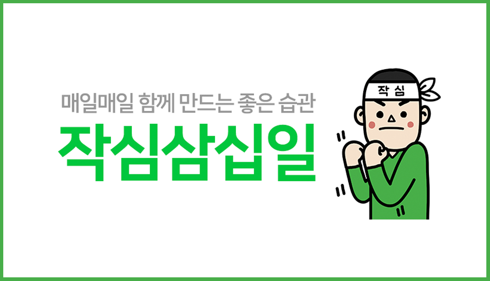
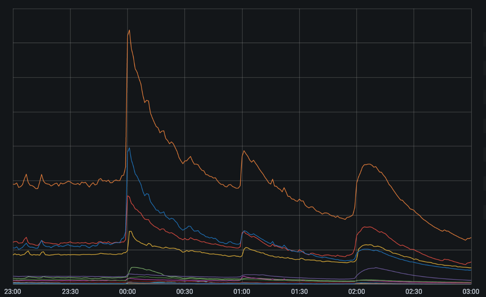
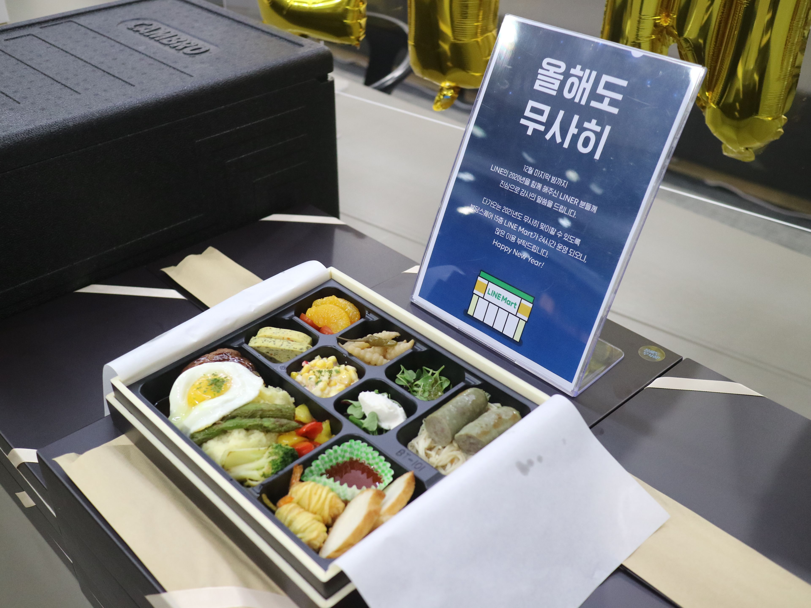
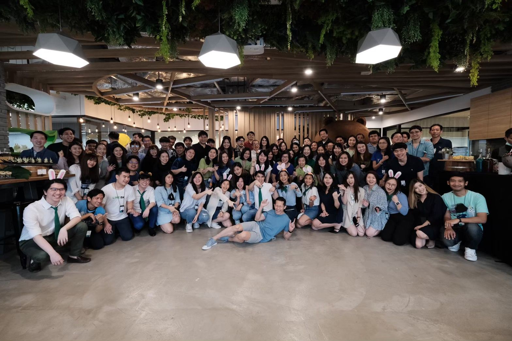

One step closer to a better future
Explore Life at RINE
-

RINER들이 함께 만드는 좋은 습관 프로젝트 '작심삽십일'
매일 아침 일찍 일어나기, 한 달에 2권 독서하기, 홈트레이닝으로 5kg 감량하기 등 굳세게 마음을 다잡으며 시작했지만 작심삼일로 아쉽게 끝났던 경험 모두 있으시죠? LINE에서는 이러한 결심들이 작심삼일로 그치지 않고, 계속해서 이어질 수 있도록 돕는 프로그램이 있는데요. 바로, 30일 동안 동료 LINER들과 서로 응원하며 함께 좋은 습관을 만드는 ‘작심삼십일’ 프로젝트가 매월 진행되고 있습니다.
-

LRINE 신년 대응 이야기 '개발자'편
"일본(GMT+9)에서 시작해 대만(GMT+8)을 거쳐 태국(GMT+7)에 이르는 새해 인사의 파도타기는 세 번의 큰 트래픽을 만들며 라인의 엔지니어들을 긴장시킨다." <나는 LINE 개발자입니다> 中 세 번의 0시, 글로벌 메신저인 라인에서만 경험할 수 있는 특별한 이야기가 아닐까 생각합니다. 과연 라인의 개발자들은 어떻게 대규모 트래픽에 대응하고 있을까요? 2021년 신년 대응 TF의 PM을 담당하신 LINE PLUS Service Engineering팀 김현수 님과의 특별한 인터뷰를 준비했습니다.
-

RINE 신년 대응 이야기 'Care'편
카운트 다운, 5, 4, 3, 2, 1! “Happy New year!” 모두가 한마음으로 기다린 그 순간, 사랑하는 가족 그리고 친구들에게 따뜻한 새해 인사 잘 전달하셨나요? 1월 1일 0시가 되는 순간, 새해를 축하하는 LINE 메시지가 속속 도착하기 시작했는데요. 이렇게 특별한 순간을 놓치지 않고 소중한 사람들과 함께 나눌 수 있었던 것은, 비장하게 전투태세를 갖추고 자정을 대비하고 있던 LINE 개발자분들이 있으셨기 때문입니다.
-

COVID-19 시대에서 모두와 관계를 유지하는 방법!
COVID-19가 태국을 강타한 2020년 3월, 태국 모바일 뱅킹 서비스 ‘LINE BK’를 운영하는 KASIKORN LINE의 LINER들은 재택근무를 시작했습니다. 처음에는 재택근무가 편했지만 시간이 지나면서 LINER들은 함께 업무를 하고, 이야기를 나누고 식사했던 KASIKORN LINE 사무실에서의 분위기가 그리워졌죠. 이전에는 직원이 적었기 때문에 비대면 협업은 어렵지 않았습니다. 하지만 COVID-19가 예상보다 더 심각해지고 재택근무도 연장되면서, LINER들은 팬데믹이 해결되기만을 가만히 기다리거나 팀 성장을 더는 미룰 수 없다고 생각했습니다. KASIKORN LINE은 팬데믹에도 불구하고 업계 상황과 반대로 적극적으로 새로운 인재를 채용했고, 수개월 만에 인원수를 두 배로 늘렸습니다. 물론 이 같은 결정은 험난했지만, 저희는 실질적인 규모를 키우기 위해 최선을 다했습니다.
Meet the Global RINERS
-
Design
Yuri Kim
Brand Design
Webber님은 2017년에 기술 컨설턴트로 LINE Pay Taiwan에 합류한 후, 2018년에 Pay Development 팀의 리드가 되었습니다. 현재는 개발 사이클의 프로세스를 관리하면서 내부 및 외부 시스템 서비스 지원 업무를 담당하고 있습니다. 또한 내부 및 외부 사용자의 요구를 충족하는 최상의 솔루션 제공을 목표로 하여, 개발에서 봉착하는 새로운 도전을 새로운 즐거움으로 여기며 해결하고 있습니다. LINE Pay에서 Webber님의 경험과 성과에 대하여 좀 더 자세히 살펴보겠습니다!
-
Engineering
Webber Su
Pay Development
Esme Chen님은 2017년 LINE에 입사하여, LINE TODAY 서비스의 미디어 파트너십 업무를 담당했습니다. 외부 언론 매체와 우호적인 관계를 형성해 상호 간 이익을 얻을 수 있도록 노력하고, 기존 사업을 확장하며 다른 이해관계자들과 여러 협업 프로젝트에도 활발히 참여했습니다. Esme님의 LINE Taiwan에서의 활약이 내외부 파트너들에게 어떤 긍정적인 영향력을 끼치고 있는지 함께 확인해보시죠!
-
Engineering
Minjeong Kim
Database Administration
지민님은 2016년 여름 인턴으로 근무한 후, 신입사원으로 입사했습니다. 입사 초에는 LINE 주요 서비스의 Product Design을 담당했다면, 현재는 LINE의 디자인 가이드를 설정하고 기준을 제시하는 LINE Design System을 제작하며 LINE New Design 프로젝트의 진행을 이끌었습니다. LINE New Design 프로젝트 때 어떤 고민과 노력이 있었는지, 지민님은 디자이너로서 어떤 경험과 성장의 고민을 하는지 함께 만나보시죠!